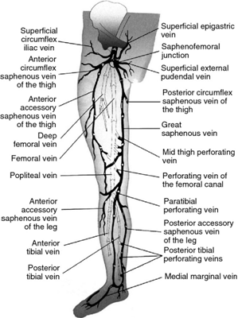
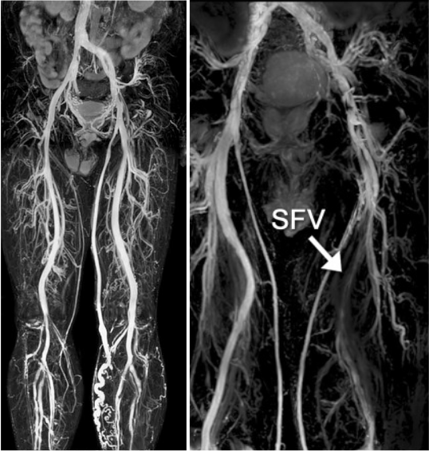
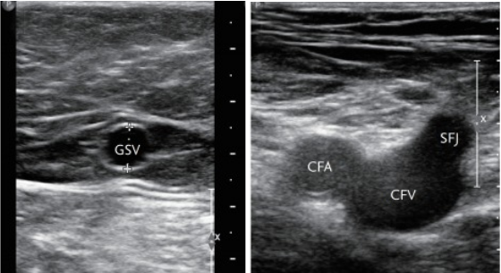
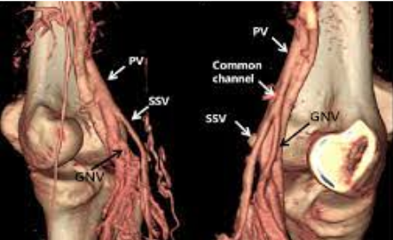
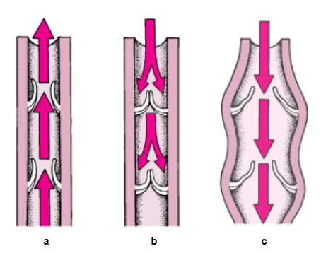
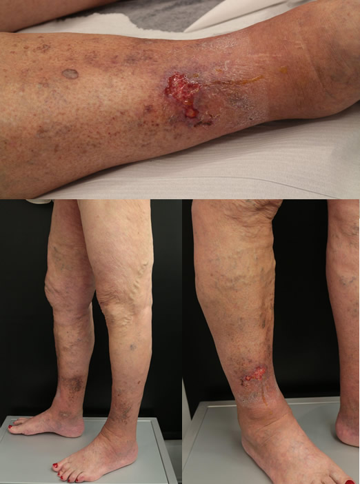
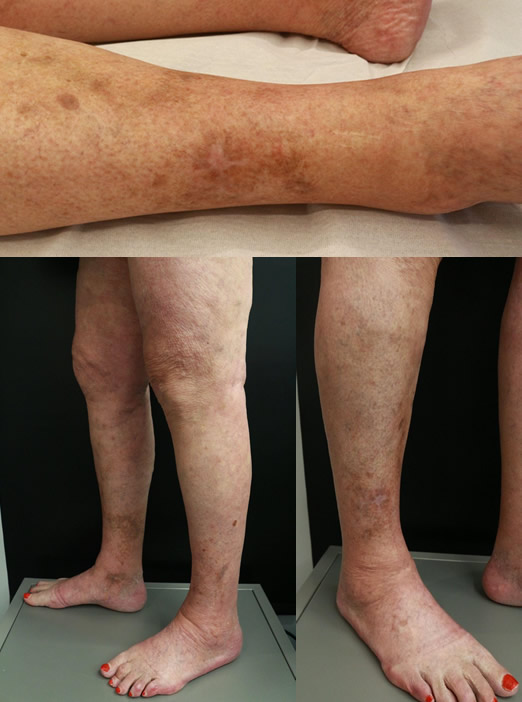

Qué es una variz y otras dudas razonables
En clínicas Dr. Juan Cabrera todos nuestros pacientes pasan por una primera visita diagnóstica en la que, además de la elaboración de la historia clínica, inspección y exploración mediante Eco Doppler Color, se les plantea la siguiente cuestión: “¿Por qué acude a nosotros?”. Aunque hay quien se extraña ésta es fundamental, ya que nos permite conocer la razón que los trae y que es a la postre el objetivo principal a solucionar: dolor de piernas, la muy manida “mala circulación” (lo que quiera que esto signifique), observarse una variz, presentar una úlcera o, simplemente, la mera motivación estética (poder, después de años quizás, utilizar un pantalón corto o una falda).
Nuestra misión, al convertirnos desde ese primer momento en sus médicos, es diagnosticar e informarles sobre su patología, además de explicarles de forma clara y veraz las alternativas terapéuticas que más les pueden convenir (en nuestra clínica o fuera de ella). Es decir, que tras la primera visita el paciente posee toda la información necesaria para decidir, objetivamente y sin prisas, cómo enfrentarse a su problema de salud y/o de estética.
Un poco de anatomía y fisiología
Situémonos, para entender mejor el problema. El sistema venoso recoge y conduce la sangre desde los tejidos periféricos, una vez estos han aprovechado el oxígeno y los nutrientes, hacia el corazón y los pulmones. Sirven además de vasos de capacitancia, esto es, como reservorio en los momentos en los que el requerimiento de volumen circulante es menor.1

Figura 1: Anatomía de los sistemas venosos superficial y profundo de miembros inferiores. Tomado de Management of superficial vein thrombosis (Cosmi, 2015)
Anatómicamente, se diferencian un sistema venoso superficial (SVS), situado por encima de las aponeurosis externas musculares y la piel, y un sistema venoso profundo (SVP), entre los músculos y por debajo de sus aponeurosis internas 2 (fig. 1).
Comenzando por este último, diremos que es responsable del 90% del flujo de retorno venoso, principalmente gracias al bombeo muscular durante la deambulación.3 Se origina en la planta de los piés, desde un almohadillado venoso que drena en las venas del sóleo, gemelares, tibiales (anterior y posterior) y peronea, todas en el segmento infrapopliteo (debajo de la rodilla). Luego se continúa por la vena poplítea hasta la femoral superficial, que uniéndose con la femoral profunda pasa a formar la vena femoral común. En ella drena a la altura de la zona inguinal la vena safena interna o mayor, para continuar con la Iliaca externa4.(fig. 2)

Figura 2: sendos ejemplos de RMN de sistema venoso de miembros inferiores, con identificación de la vena femoral superficial (FSV) tomado de (Huang et al., 2019) y (Chen et al., 2021)
Su afectación es menos frecuente que la del SVS pero mucho más grave.5 Así, una trombosis venosa profunda (TVP) tiene una alta probabilidad (⅔ del total) de desprender pequeños fragmentos (émbolos) que pueden empastar distalmente ocasionando un tromboembolismo pulmonar (TEP), cuadro grave que supone un 10% de las muertes intrahospitalarias.6 Además por sí misma puede ocasionar una interrupción en el propio retorno o, una vez recanalizada, provocar una incompetencia de dichas venas (síndrome postrombótico).7
En cuanto al Sistema Venoso Superficial, anatómicamente se localiza por encima de los grupos musculares y drena la sangre de la piel y el tejido celular subcutáneo. Normalmente se divide en 2 troncos principales, la vena safena interna o mayor (GSV) y la vena safena externa o menor (SSV) y sus tributarias, algunas de las cuales sirven de conexión entre ellas, como la de Giacomini. 8
La GSV pasa por ser el vaso más largo del organismo, con una localización intrafascial (también conocido como “ojo safeno”) en la mayor parte de su recorrido, lo que permite su fácil localización ecográfica (fig.3). Se origina en la cara medial del pié y termina en la unión safeno femoral (SFJ), desembocando, como hemos visto antes, en la vena femoral común (CFV)9.(fig.3)

Figura 3: Imágenes ecográficas de la GSV en muslo (izquierda) y de la unión safeno femoral derecha, donde también se observa la Arteria Femoral Común (CFA). (Youn & Lee, 2019b)
La vena safena externa se origina por la confluencia de las venas de dorsolaterales del pié, pasa por detrás del maléolo externo del tobillo y drena en la vena poplítea (PV), normalmente a la altura del hueco poplíteo (aunque existen numerosas variaciones).10 (fig. 4)

Figura 4: Reconstrucción en 3D mediante angio TAC de la unión safeno poplítea, con detalle de la SSV y Vena Poplítea (PV). (S. Kim et al., 2012)
Pues bien, es en el sistema venoso superficial donde se localizan las varices.
Hay que tener en cuenta que las venas normales tienen un diámetro por lo general pequeño (inferior a 4mm) y realizan su correcta función gracias a unas válvulas que permiten que el flujo sanguíneo sea ascendente y unidireccional, en contra de la fuerza de la gravedad, hacia el corazón. Cuando éstas se alteran (normalmente por un fallo en su conformación, intrínseco a la persona), la corriente pasa a ser bidireccional, es decir, la sangre sube y baja. Este mayor trasiego aumenta la presión dentro del vaso lo que, unido al tiempo, altera y dilata su pared11 (fig 5) y se asocia a un concreto tipo de sintomatología, la flebectásica, habitualmente descrita como pesadez, dolor, picor, calambres, etc…

Figura 5: funcionamiento venoso normal, con flujo ascendente (a) y sin reflujo gravitatorio por válvulas competentes (b). En c, presencia de reflujo centrífugo por válvulas insuficientes, con repercusión transmural secundaria al aumento de la presión venosa..(Manual MSD versión para profesionales, s. f.)
En cualquier caso, y de forma crónica, esto repercute afectando al normal funcionamiento del Sistema Venoso Profundo y la elevación distal de la presión intersticial, llevando a cambios en el tejido celular subcutáneo y la piel de la zona implicada. desde las típicas dilataciones que permiten identificar a simple vista las varices, a los eczemas y el edema,12 que complica la oxigenación y nutrición, seguido de la necrosis del panículo adiposo, lipodermatoesclerosis y dermatitis y, en los casos más extremos, llegando a la ulceración.13

Figura 6: paciente donde concurren varices, telangiectasias, edema, lipodermatoesclerosis, dermatitis y úlceras, y que refería intenso dolor de características flebectásicas (aumentaba con la bipedestación y el calor)
Conclusiones
Dado lo expuesto, podemos ahora sí contestar razonadamente las preguntas planteadas al principio:
- ¿Qué es una variz?: es una vena que no funciona bien, es decir, que no conduce correctamente y de forma unidireccional la sangre hacia el corazón. Esto se debe no a obstrucciones o residuos en su interior sino a una alteración en sus válvulas, que son las que posibilitan este hecho.
- ¿Es perjudicial eliminarlas?: no, está completamente justificado, ya que supone un beneficio. Por una parte, se alivia la sobrecarga que provocan sobre el sistema venoso profundo y, por otra, se corrige el aumento de la presión sobre el resto de los tejidos, evitando la sintomatología flebectásica y las alteraciones mencionadas (edema, dermatitis, úlceras, etc.).
- ¿Qué ocurre con la sangre que alberga?: pasa de no circular correctamente, aumentando la presión, a hacerlo de forma desahogada y directamente por el sistema venoso profundo, cosa para lo que éste tiene capacidad de sobra (por sí solo, como hemos visto, realiza el 90% de la función de retorno).
En Clínicas Doctor Juan Cabrera estamos especializados en la eliminación eficaz de todo tipo de varices, de forma ambulatoria y mínimamente invasiva, gracias a su exclusiva técnica de escleroterapia ecoguiada con MicroespumaⓅ .
Por cierto, como muestra de ello, la paciente de más arriba quedó curada una vez eliminadas la patología varicosa y sus consecuencias (entre ellas el dolor, la dermatitis y la úlcera). (fig. 7)

Figura 7: la misma paciente curada tras el tratamiento con Microespuma
BIBLIOGRAFÍA
1. Youn, Y. J., & Lee, J. (2019a). Chronic venous insufficiency and varicose veins of the lower extremities. The Korean Journal of Internal Medicine, 34(2), 269-283. https://doi.org/10.3904/kjim.2018.230.
2. Cavezzi, A., Labropoulos, N., Partsch, H., Ricci, S., Caggiati, A., Myers, K., Nicolaides, A., & Smith, P. C. (2006). Duplex ultrasound investigation of the veins in chronic venous disease of the lower limbs—UIP consensus document. Part II. Anatomy. European Journal of Vascular and Endovascular Surgery: The Official Journal of the European Society for Vascular Surgery, 31(3), 288-299. https://doi.org/10.1016/j.ejvs.2005.07.020
3. Johnson BF, Manzo RA, Bergelin RO, Strandness DE Jr. Relationship between changes in the deep venous system and the development of the postthrombotic syndrome after an acute episode of lower limb deep vein thrombosis: a one- to six-year follow-up. J Vasc Surg. 1995 Feb;21(2):307-12; discussion 313. doi: 10.1016/s0741-5214(95)70271-7. PMID: 7853603.
4. Mozes G, Gloviczki P. New discoveries in anatomy and new terminology of leg veins: clinical implications. Vasc Endovascular Surg. 2004 Jul-Aug;38(4):367-74. doi: 10.1177/153857440403800410. PMID: 15306956.
5. Line BR. Pathophysiology and diagnosis of deep venous thrombosis. Semin Nucl Med. 2001 Apr;31(2):90-101. doi: 10.1053/snuc.2001.21406. PMID: 11330789.
6. Streiff MB, Agnelli G, Connors JM, Crowther M, Eichinger S, Lopes R, McBane RD, Moll S, Ansell J. Guidance for the treatment of deep vein thrombosis and pulmonary embolism. J Thromb Thrombolysis. 2016 Jan;41(1):32-67. doi: 10.1007/s11239-015-1317-0. Erratum in: J Thromb Thrombolysis. 2016 Apr;41(3):548. PMID: 26780738; PMCID: PMC4715858.
7. Galanaud JP, Righini M, Le Collen L, Douillard A, Robert-Ebadi H, Pontal D, Morrison D, Barrellier MT, Diard A, Guénnéguez H, Brisot D, Faïsse P, Accassat S, Martin M, Delluc A, Solymoss S, Kassis J, Carrier M, Quéré I, Kahn SR. Long-term risk of postthrombotic syndrome after symptomatic distal deep vein thrombosis: The CACTUS-PTS study. J Thromb Haemost. 2020 Apr;18(4):857-864. doi: 10.1111/jth.14728. Epub 2020 Feb 11. PMID: 31899848.
8. Caggiati, A., Bergan, J. J., Gloviczki, P., Jantet, G., Wendell-Smith, C. P., Partsch, H., & International Interdisciplinary Consensus Committee on Venous Anatomical Terminology. (2002). Nomenclature of the veins of the lower limbs: An international interdisciplinary consensus statement. Journal of Vascular Surgery, 36(2), 416-422. https://doi.org/10.1067/mva.2002.125847
9. Caggiati A, Bergan JJ, Gloviczki P, Eklof B, Allegra C, Partsch H; International Interdisciplinary Consensus Committee on Venous Anatomical Terminology. Nomenclature of the veins of the lower limb: extensions, refinements, and clinical application. J Vasc Surg. 2005 Apr;41(4):719-24. doi: 10.1016/j.jvs.2005.01.018. PMID: 15874941.
10. Caggiati A. Fascial relationships of the short saphenous vein. J Vasc Surg. 2001 Aug;34(2):241-6. doi: 10.1067/mva.2001.116972. PMID: 11496275.
11. Recek C. Venous pressure gradients in the lower extremity and the hemodynamic consequences. Vasa. 2010 Nov;39(4):292-7. doi: 10.1024/0301-1526/a000052. PMID: 21104617.
12. Sippel K, Mayer D, Ballmer B, Dragieva G, Läuchli S, French LE, Hafner J. Evidence that venous hypertension causes stasis dermatitis. Phlebology. 2011 Dec;26(8):361-5. doi: 10.1258/phleb.2010.010043. Epub 2011 Jun 6. PMID: 21646304.
13. Sippel K, Mayer D, Ballmer B, Dragieva G, Läuchli S, French LE, Hafner J. Evidence that venous hypertension causes stasis dermatitis. Phlebology. 2011 Dec;26(8):361-5. doi: 10.1258/phleb.2010.010043. Epub 2011 Jun 6. PMID: 21646304.
Dr. Gonzalo López
Especialista en flebología. Doctor en Ingeniería Tisular, especialidad en BiomaterialesClínica Dr. Juan Cabrera (A Coruña)
Productos Y Servicios
Si quieres conocer nuestra gama de productos más detalladamente y de manera cómoda aquí puedes ver todos nuestros productos
ver másContacta
¿Alguna duda acerca de nuestros productos o servicios? Aquí tienes todas las formas de contactar con nosotros
ver masTe Llamamos Gratis
Si tienes alguna pregunta sobre nuestros productos o servicios o necesitas consejos sobre algo relacionado con nuestro negocio, por favor déjanos un teléfono fijo o número de teléfono móvil y te llamamos gratis.
ver mas